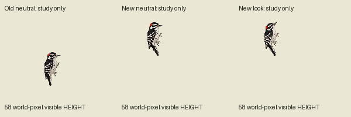
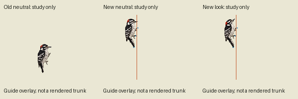
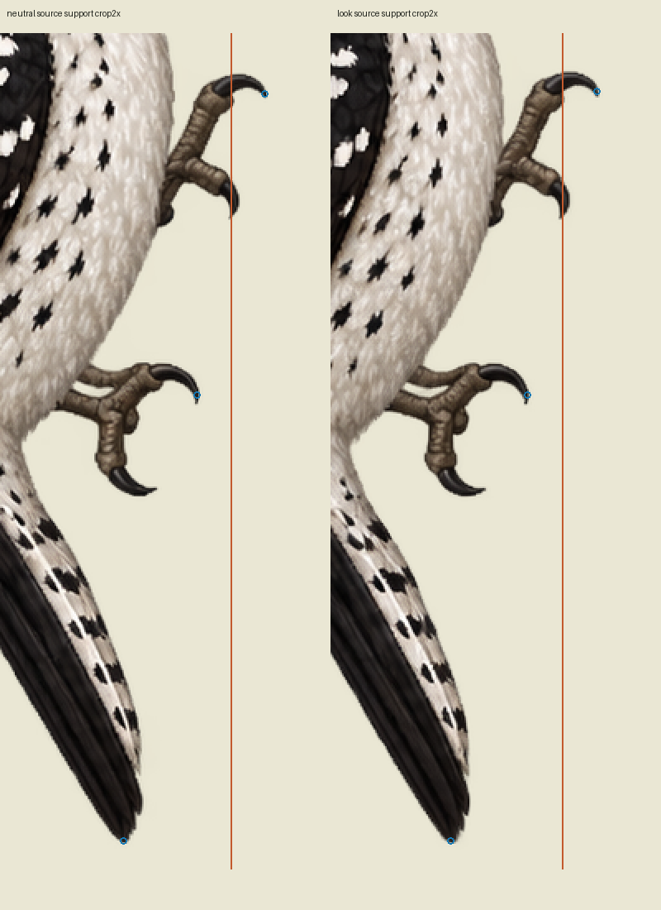
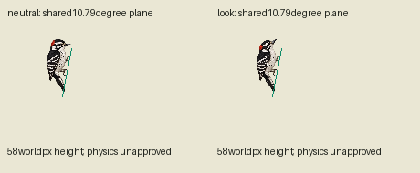
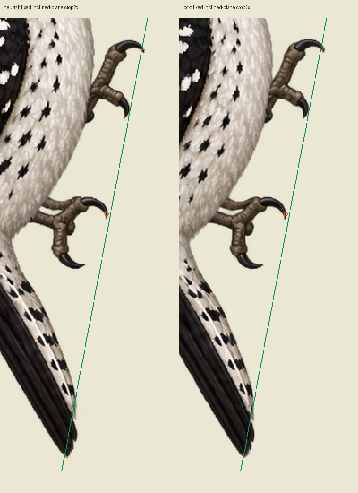

One real reference edit; two new drawn poses. Tail angles down/right, but the requested vertical toe plane still fails. A separate approximately11degree inclined-line hypothesis fits the measured anchors closely; independent anatomy/contact review remains required. No binding or physics approval. No retry.
Source APNG, proposed visible height58worldpixels:
Normal yard-scale image and a separate guide overlay derived from art pixels:


Enlarged exact source support crops with inferred mean toe plane (orange) and measured endpoint proxies (blue). Guide is not trunk artwork.

See support-measurements.json and PRIMARY-SOURCE-MANIFEST.json for endpoints, units, gaps, exact source IDs and retained prompt/original. Independent review pending.
One least-squares line shared by all six measured toe/tail endpoints:10.79degrees from vertical; largest perpendicular residual0.357worldunits. This does not fix the requested vertical plane and does not establish anatomical pressure/contact. Independent source review must decide whether the unchanged pixels plausibly support this inclined surface.

